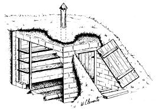

[1] Check jars for nicks, cracks and sharp edges. Check cans for corrosion and cracks in tin plating. Discard any defective containers. Use new lids and?for jars ? good rubber seals. [2] Wash containers, covers and seals in hot, soapy water. Scald and leave in hot water until ready to use. [3] Select firm, fresh ? but not overripe ? produce. [4] Prepare fruits and vegetables according to appropriate hot-pack or cold-pack recipe.